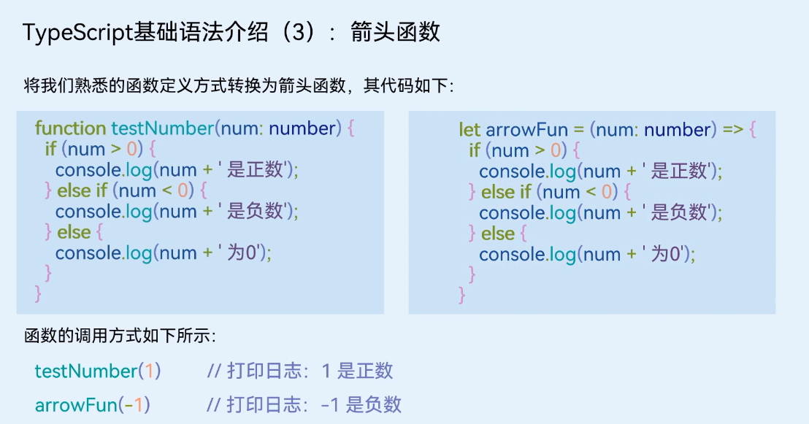

Ts快速入门
编程语言介绍
ArkTS是HarmonyOS优选的主力应用开发语言。它在TypeScript（简称TS）的基础上，匹配ArkUI框架，扩展了声明式UI、状态管理等相应的能力，让开发者以更简洁、更自然的方式开发跨端应用。要了解什么是ArkTS，我们首先要了解下ArkTS、TypeScript和JavaScript之间的关系：
- JavaScript是一种属于网络的高级脚本语言，已经被广泛用于Web应用开发，常用来为网页添加各式各样的动态功能，为用户提供更流畅美观的浏览效果。
- TypeScript 是 JavaScript 的一个超集，它扩展了 JavaScript 的语法，通过在JavaScript的基础上添加静态类型定义构建而成，是一个开源的编程语言。
- ArkTS兼容TypeScript语言，拓展了声明式UI、状态管理、并发任务等能力。
由此可知，TypeScript是JavaScript的超集，ArkTS则是TypeScript的超集，他们的关系如下图所示：

基础类型
TypeScript支持一些基础的数据类型，如布尔型、数组、字符串等，下文举例几个较为常用的数据类型，我们来了解下他们的基本使用。
布尔值
TypeScript中可以使用boolean来表示这个变量是布尔值，可以赋值为true或者false。
let isDone: boolean = false;
数字
TypeScript里的所有数字都是浮点数，这些浮点数的类型是 number。除了支持十进制，还支持二进制、八进制、十六进制。
let decLiteral: number = 2023;
let binaryLiteral: number = 0b11111100111;
let octalLiteral: number = 0o3747;
let hexLiteral: number = 0x7e7;
字符串
TypeScript里使用 string表示文本数据类型， 可以使用双引号（ “）或单引号（’）表示字符串。
let name: string = "Jacky";name = "Tom";name = 'Mick';
数组
TypeScrip有两种方式可以定义数组。 第一种，可以在元素类型后面接上 []，表示由此类型元素组成的一个数组。
let list: number[] = [1, 2, 3];
第二种方式是使用数组泛型，Array<元素类型>。
let list: Array<number> = [1, 2, 3];
元组
元组类型允许表示一个已知元素数量和类型的数组，各元素的类型不必相同。 比如，你可以定义一对值分别为 string和number类型的元组。
let x: [string, number];
x = ['hello', 10];// OK
x = [10, 'hello']; // Error
枚举
enum类型是对JavaScript标准数据类型的一个补充，使用枚举类型可以为一组数值赋予友好的名字。
enum Color {Red, Green, Blue};
let c: Color = Color.Green;
Unknown
有时候，我们会想要为那些在编程阶段还不清楚类型的变量指定一个类型。这种情况下，我们不希望类型检查器对这些值进行检查而是直接让它们通过编译阶段的检查。那么我们可以使用unknown类型来标记这些变量。
let notSure: unknown = 4;
notSure = 'maybe a string instead';
notSure = false;
Void
当一个函数没有返回值时，你通常会见到其返回值类型是 void。
function test(): void { console.log('This is function is void');}
Null 和 Undefined
TypeScript里，undefined和null两者各自有自己的类型分别叫做undefined和null。
let u: undefined = undefined;let n: null = null;
联合类型
联合类型（Union Types）表示取值可以为多种类型中的一种。
let myFavoriteNumber: string | number;myFavoriteNumber = 'seven';myFavoriteNumber = 7;
条件语句
条件语句用于基于不同的条件来执行不同的动作。TypeScript 条件语句是通过一条或多条语句的执行结果（True 或 False）来决定执行的代码块。
if 语句
TypeScript if 语句由一个布尔表达式后跟一个或多个语句组成。
var num:number = 5if (num > 0) { console.log('数字是正数') }
if…else 语句
一个 if 语句后可跟一个可选的 else 语句，else 语句在布尔表达式为 false 时执行。
var num:number = 12;
if (num % 2==0)
{
console.log('偶数');
}
else
{
console.log('奇数');
}
if…else if….else 语句
if…else if….else 语句在执行多个判断条件的时候很有用。
var num:number = 2 if(num > 0) { console.log(num+' 是正数') } else if(num < 0) { console.log(num+' 是负数') } else { console.log(num+' 为0') }
switch…case 语句
一个 switch 语句允许测试一个变量等于多个值时的情况。每个值称为一个 case，且被测试的变量会对每个 switch case 进行检查。
var grade:string = 'A'; switch(grade) { case 'A': { console.log('优'); break; } case 'B': { console.log('良'); break; } case 'C': { console.log('及格'); break; } case 'D': { console.log('不及格'); break; } default: { console.log('非法输入'); break; } }
函数
函数是一组一起执行一个任务的语句，函数声明要告诉编译器函数的名称、返回类型和参数。TypeScript可以创建有名字的函数和匿名函数，其创建方法如下：
// 有名函数function add(x, y) { return x + y;}
// 匿名函数let myAdd = function (x, y) { return x + y;};
为函数定义类型
为了确保输入输出的准确性，我们可以为上面那个函数添加类型：
// 有名函数：给变量设置为number类型function add(x: number, y: number): number { return x + y;}
// 匿名函数：给变量设置为number类型let myAdd = function (x: number, y: number): number { return x + y;};
可选参数
在TypeScript里我们可以在参数名旁使用 ?实现可选参数的功能。 比如，我们想让lastName是可选的：
function buildName(firstName: string, lastName?: string) { if (lastName) return firstName + ' ' + lastName; else return firstName;}
let result1 = buildName('Bob');let result2 = buildName('Bob', 'Adams');
剩余参数
剩余参数会被当做个数不限的可选参数。 可以一个都没有，同样也可以有任意个。 可以使用省略号（ …）进行定义：
function getEmployeeName(firstName: string, ...restOfName: string[]) { return firstName + ' ' + restOfName.join(' ');}
let employeeName = getEmployeeName('Joseph', 'Samuel', 'Lucas', 'MacKinzie');
箭头函数
ES6版本的TypeScript提供了一个箭头函数，它是定义匿名函数的简写语法，用于函数表达式，它省略了function关键字。箭头函数的定义如下，其函数是一个语句块：
( [param1, parma2,…param n] )=> { // 代码块}
其中，括号内是函数的入参，可以有0到多个参数，箭头后是函数的代码块。我们可以将这个箭头函数赋值给一个变量，如下所示：
let arrowFun = ( [param1, parma2,…param n] )=> { // 代码块}
如何要主动调用这个箭头函数，可以按如下方法去调用：
arrowFun(param1, parma2,…param n)

后面，我们在学习HarmonyOS应用开发时会经常用到箭头函数。例如，给一个按钮添加点击事件，其中onClick事件中的函数就是箭头函数。
Button("Click Now") .onClick(() => { console.info("Button is click") })
类
TypeScript支持基于类的面向对象的编程方式，定义类的关键字为 class，后面紧跟类名。类描述了所创建的对象共同的属性和方法。
类的定义
例如，我们可以声明一个Person类，这个类有3个成员：一个是属性（包含name和age)，一个是构造函数，一个是getPersonInfo方法，其定义如下所示。
class Person {
private name: string
private age: number
constructor(name: string, age: number) {
this.name = name;
this.age = age;
}
public getPersonInfo(): string {
return `My name is ${this.name} and age is ${this.age}`;
}
}
通过上面的Person类，我们可以定义一个人物Jacky并获取他的基本信息，其定义如下：
let person1 = new Person('Jacky', 18);
person1.getPersonInfo();
继承
继承就是子类继承父类的特征和行为，使得子类具有父类相同的行为。TypeScript中允许使用继承来扩展现有的类，对应的关键字为extends。
super关键字可以用来访问父类的构造方法
class Employee extends Person {
private department: string
constructor(name: string, age: number, department: string) {
super(name, age);
this.department = department;
}
public getEmployeeInfo(): string {
return this.getPersonInfo() + ` and work in ${this.department}`;
}
}
通过上面的Employee类，我们可以定义一个人物Tom，这里可以获取他的基本信息，也可以获取他的雇主信息，其定义如下：
let person2 = new Employee('Tom', 28, 'HuaWei');person2.getPersonInfo();person2.getEmployeeInfo();
在TypeScript中，有public、private、protected修饰符，其功能和具体使用场景大家可以参考TypeScript的相关学习资料，进行拓展学习。
模块
随着应用越来越大，通常要将代码拆分成多个文件，即所谓的模块（module）。模块可以相互加载，并可以使用特殊的指令 export 和 import 来交换功能，从另一个模块调用一个模块的函数。
两个模块之间的关系是通过在文件级别上使用 import 和 export 建立的。模块里面的变量、函数和类等在模块外部是不可见的，除非明确地使用 export 导出它们。类似地，我们必须通过 import 导入其他模块导出的变量、函数、类等。
导出
任何声明（比如变量，函数，类，类型别名或接口）都能够通过添加export关键字来导出，例如我们要把NewsData这个类导出，代码示意如下：
export class NewsData {
title: string;
content: string;
constructor(title: string, content: string) {
this.title = title;
this.content = content;
}
}
导入
模块的导入操作与导出一样简单。 可以使用以下 import形式之一来导入其它模块中的导出内容。
import { NewsData } from '../common/bean/NewsData';
迭代器
当一个对象实现了Symbol.iterator属性时，我们认为它是可迭代的。一些内置的类型如Array，Map，Set，String，Int32Array，Uint32Array等都具有可迭代性。
for..of 语句
for..of会遍历可迭代的对象，调用对象上的Symbol.iterator方法。 下面是在数组上使用for..of的简单例子：用于遍历对象
let someArray = [1, "string", false];
for (let entry of someArray) { console.log(entry); // 1, "string", false}
for..of vs. for..in 语句
for..of和for..in均可迭代一个列表，但是用于迭代的值却不同：for..in迭代的是对象的键，而for..of则迭代的是对象的值。用于遍历下标，打印下标
let list = [4, 5, 6];
for (let i in list) { console.log(i); // "0", "1", "2",}
for (let i of list) { console.log(i); // "4", "5", "6"}
...